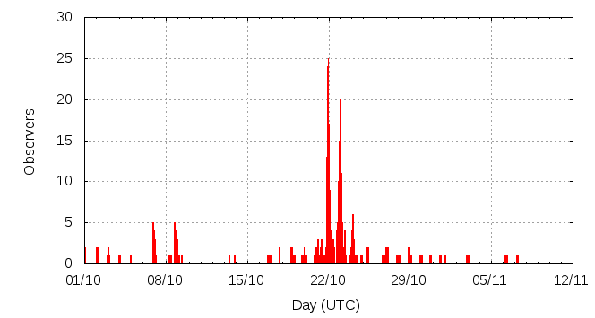

[ www.imo.net ]
This page shows automated results of the Orionids 2011, based on visual observations by volunteers astronomers collected through the report form of the International Meteor Organization (IMO). The information on this page is generated automatically; for scientific use please refer to manual analyses published in scientific journals (such as WGN). Send your feedback regarding this page to Geert Barentsen.
Page contents:
Page generated: 2011 December 12 at 14:15 UTC.
The graph below shows the ZHR (Zenithal Hourly Rate), which is the number of meteors an observer would see under a very dark sky with the radiant of the shower in zenith.
ZHRmax = 33 based on 2307 Orionids reported in 540 intervals, assuming population index r = 2.5

| Time (UTC) | Solarlon | nINT | nORI | ZHR | Particle density | |
|---|---|---|---|---|---|---|
| 2011-10-01 17:27 | 188.029 | 9 | 8 | 2 | ±1 | 4 / 109·km3 |
| 2011-10-03 18:47 | 190.051 | 8 | 11 | 4 | ±1 | 8 / 109·km3 |
| 2011-10-08 02:03 | 194.291 | 48 | 38 | 3 | ±0 | 6 / 109·km3 |
| 2011-10-09 03:03 | 195.319 | 8 | 3 | 2 | ±1 | 4 / 109·km3 |
| 2011-10-13 22:56 | 200.091 | 1 | 0 | 9 | ±9 | 19 / 109·km3 |
| 2011-10-17 18:12 | 203.860 | 7 | 14 | 10 | ±3 | 21 / 109·km3 |
| 2011-10-19 15:49 | 205.746 | 20 | 52 | 17 | ±2 | 36 / 109·km3 |
| 2011-10-21 02:07 | 207.166 | 20 | 85 | 24 | ±3 | 51 / 109·km3 |
| 2011-10-21 15:56 | 207.738 | 21 | 81 | 15 | ±2 | 32 / 109·km3 |
| 2011-10-21 23:50 | 208.066 | 107 | 416 | 21 | ±1 | 44 / 109·km3 |
| 2011-10-22 03:14 | 208.207 | 32 | 159 | 24 | ±2 | 51 / 109·km3 |
| 2011-10-22 08:13 | 208.414 | 16 | 93 | 33 | ±3 | 70 / 109·km3 |
| 2011-10-22 19:11 | 208.868 | 23 | 85 | 20 | ±2 | 42 / 109·km3 |
| 2011-10-23 00:43 | 209.098 | 91 | 561 | 26 | ±1 | 55 / 109·km3 |
| 2011-10-23 03:31 | 209.214 | 19 | 126 | 27 | ±2 | 57 / 109·km3 |
| 2011-10-23 09:41 | 209.470 | 16 | 141 | 27 | ±2 | 57 / 109·km3 |
| 2011-10-23 22:20 | 209.995 | 18 | 80 | 18 | ±2 | 38 / 109·km3 |
| 2011-10-24 02:48 | 210.180 | 24 | 151 | 19 | ±2 | 40 / 109·km3 |
| 2011-10-24 12:50 | 210.597 | 5 | 81 | 30 | ±3 | 63 / 109·km3 |
| 2011-10-25 13:28 | 211.619 | 10 | 63 | 15 | ±2 | 32 / 109·km3 |
| 2011-10-27 08:52 | 213.423 | 14 | 37 | 10 | ±2 | 21 / 109·km3 |
| 2011-10-29 21:09 | 215.932 | 8 | 6 | 2 | ±1 | 4 / 109·km3 |
| 2011-10-31 19:02 | 217.843 | 4 | 0 | 1 | ±1 | 2 / 109·km3 |
| 2011-11-03 00:00 | 220.051 | 6 | 7 | 2 | ±1 | 4 / 109·km3 |
| 2011-11-06 15:18 | 223.696 | 5 | 9 | 2 | ±1 | 4 / 109·km3 |
The reported intervals are automatically added together into the bins shown above, based on the number of meteors and the distribution of the intervals. For each bin, the following parameters are computed:
Data has been received from 71 observers in 23 countries. Thank you for your efforts!
Note: click on the map for an interactive version.

| Observer | Country | Teff | nORI |
|---|---|---|---|
| Ioan Agavriloaiei | Romania | 4.25h | 30 |
| Salvador Aguirre | Mexico | 2.1h | 8 |
| Alexandre Amorim | Brazil | 3.65h | 7 |
| Joanna Antosik | Poland | 3.17h | 18 |
| Rainer Arlt | Germany | 5.55h | 29 |
| Stela Arlt | Germany | 2.53h | 24 |
| Tom Axelsen | Denmark | 1.80h | 20 |
| Pierre Bader | Germany | 12.9h | 61 |
| Rafael Barrios | Venezuela | 0.86h | 2 |
| Felix Bettonvil | Netherlands | 1.25h | 1 |
| Suresh Bhattarai | Nepal | 1.00h | 19 |
| Jean-marie Biets | Belgium | 5.22h | 42 |
| Zsofia Biro | Hungary | 8.25h | 62 |
| Jens Briesemeister | Germany | 2.40h | 0 |
| Vladimir Burgic | Serbia | 1.33h | 1 |
| Mark Davis | United States | 2.00h | 8 |
| C B Devgun Space | India | 0.70h | 6 |
| Sietse Dijkstra | Netherlands | 16.14h | 138 |
| Frank Enzlein | Germany | 1.83h | 18 |
| Miroslav Frenchev | Bulgaria | 5.07h | 43 |
| Stefan Fuks | Serbia | 4.04h | 8 |
| Christoph Gerber | Germany | 10.15h | 30 |
| Sylvie Gorkova | Czech Republic | 4.50h | 21 |
| Borislav Gospodinov | Bulgaria | 5.62h | 7 |
| Wayne T Hally | United States | 7h | 15 |
| Kamil Hornoch | Czech Republic | 1.68h | 2 |
| Jelisaveta Ilic | Serbia | 2.85h | 4 |
| Károly Jónás | Hungary | 3.83h | 16 |
| Karoly Jonas | Hungary | 2.26h | 3 |
| Paul Jones | United States | 5.25h | 157 |
| Paul Jones | United States | 2.00h | 53 |
| Schultze Kai | Germany | 1.00h | 11 |
| Himanshu Karkhanis | India | 5.60h | 48 |
| Roman Kovalyk | Italy | 4.09h | 3 |
| Mariusz Lemiecha | Poland | 2.5h | 17 |
| Robert Lunsford | United States | 3.00h | 24 |
| Qiang Ma | China | 2.5h | 39 |
| Pierre Martin | Canada | 3.78h | 29 |
| Mikhail Maslov | Russia | 2.74h | 19 |
| Koen Miskotte | Netherlands | 17.03h | 146 |
| Sirko Molau | Germany | 9.4h | 134 |
| Maciej Myszkiewicz | Poland | 5.43h | 2 |
| Reena Oberoi | India | 4.36h | 16 |
| Sonal Patel | India | 6.19h | 35 |
| Jatin Rathod | India | 3.84h | 19 |
| Jurgen Rendtel | Germany | 16.92h | 126 |
| Clara Ricken | Germany | 2.68h | 8 |
| Jiangao Ruan | China | 4.08h | 9 |
| Christian Schmiel | Germany | 3.3h | 18 |
| Kai Schultze | Germany | 1.06h | 23 |
| Ulrich Sperberg | Germany | 5.77h | 58 |
| Christian Bartzsch Sternwarte Riesa | Germany | 2.00h | 5 |
| Wesley Stone | United States | 3.92h | 63 |
| Richard Taibi | United States | 6.78h | 38 |
| Israel Tejera Falcón | Spain | 0.51h | 5 |
| Csilla Tepliczky | Hungary | 2.26h | 1 |
| Istvan Tepliczky | Hungary | 1.46h | 4 |
| Rushikesh Tilak | India | 2.00h | 12 |
| Jakub Koukal | Czech Republic | 37.5h | 267 |
| Michel Vandeputte | Belgium | 17.25h | 171 |
| Branislav Savic | Serbia | 4.30h | 9 |
| Snezana Todorovic | Serbia | 3.40h | 8 |
| Yasuhiro Tonomura | Japan | 2.40h | 1 |
| Shigeo Uchiyama | Japan | 5.99h | 14 |
| Peter Van Leuteren | Netherlands | 6.68h | 73 |
| Jovan Vasiljevic | Serbia | 1.33h | 2 |
| Frank Waechter | Germany | 1.26h | 0 |
| Sabine Waechter | Germany | 1.23h | 0 |
| Nitin Walmiki | India | 3.86h | 16 |
| William Watson | United States | 2.63h | 13 |
| William Watson | United States | 3.83h | 32 |
| Roland Winkler | Germany | 7.73h | 11 |
| Oliver Wusk | Germany | 3.72h | 16 |
| Zhijian Xu | China | 2.55h | 5 |
| Alexandrina Yaneva | Bulgaria | 5.4h | 2 |
| Alexsandrina Yaneva | Bulgaria | 3.30h | 1 |
| Przemyslaw Zoladek | Poland | 3.17h | 18 |
Create your own analysis. The files below can be opened using Excel:
ori2011_rate.csv (number of meteors per interval per observer)
ori2011_magn.csv (number of meteors per magnitude bin per observer)
The information on this page may be distributed freely provided credit is given to the International Meteor Organization (IMO) and, when possible, to the individual observers. The computer facilities to generate this page are provided by ESA/RSSD and Armagh Observatory.
References: